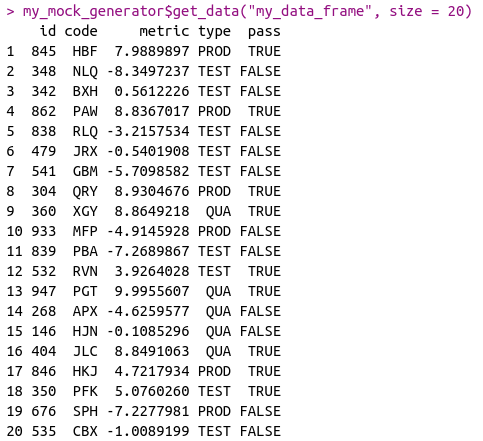
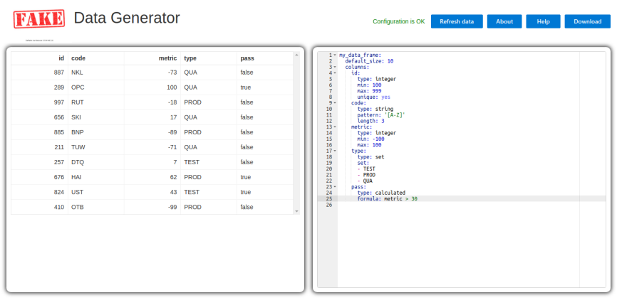

Generate mock data in R using yaml configuration.
Installation
You can install the latest version with remotes:
remotes::install_github("jakubnowicki/fixtuRes@master")Usage
fixtuRes package provides a set of tools that allow generating random mock data for testing or to use during development. Main one, R6 class named MockDataGenerator is a data generator feeded with a configuration provided in a yaml file. You can also use lower level functions designed to generate data frames, vectors or single values.
MockDataGenerator
Let’s say, that you need a data frame with 5 columns. First one should be called “id” and contain a random integer from 100 to 999. Second, “code”, should be a string of three capital letters. Third one, “metric”, is a random numeric value in -10, 10 range. Fourth, called “type”, can be one of “TEST”, “PROD”, “QUA”. Finally, the fifth one is a boolean called “pass”. It should be set to TRUE if metric is above 3, otherwise it should be set to FALSE. To create a data frame that follows those rules you will need a configuration (you can find prepared file here):
my_data_frame:
columns:
id:
type: integer
min: 100
max: 999
unique: TRUE
code:
type: string
pattern: "[A-Z]"
length: 3
metric:
type: numeric
min: -10
max: 10
type:
type: set
set: ["TEST", "PROD", "QUA"]
pass:
type: calculated
formula: "metric > 3"Now you can pass this configuration to a new MockDataGenerator object:
my_mock_generator <- fixtuRes::MockDataGenerator$new("path-to-my-configuration.yml")And just create a data frame you have just designed:
my_mock_generator$get_data("my_data_frame")
For a detailed description of configuration check this document.
Low level functions are described in R package documentation.
Showcase
You can check fixtuRes in action in Fake Data Generator. It enables live preview of your yaml configuration, downloading yaml itself and generated dataset.
